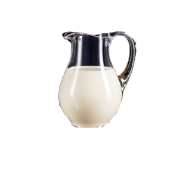
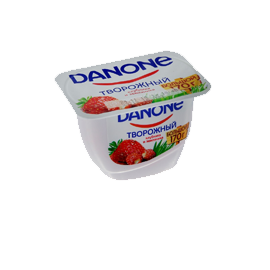
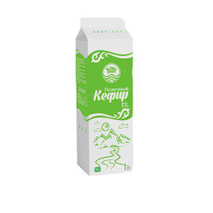
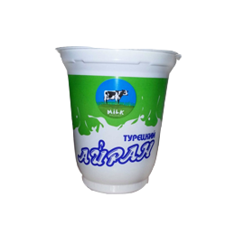

✖

Молоко
Натуральное свежее молоко

Йогурт
Йогурт Danone со вкусом клубнки

Кефир
кисломолочный напиток, получаемый из цельного или обезжиренного коровьего молока

Айран
Кисломолочный напиток на основе тураха, катыка или разновидность кефира